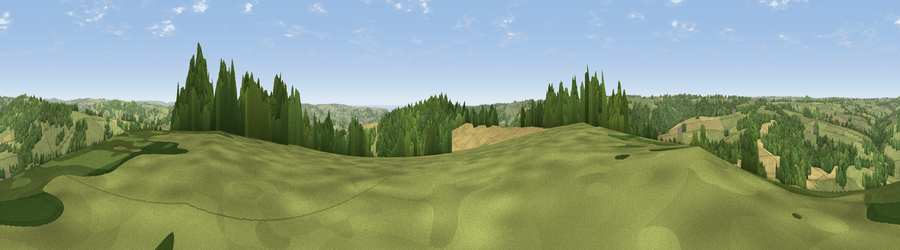

Widworthy Hill
#9120 in England · top 19% of its area beats it · near WilmingtonThe view, rendered

A 360° render of this exact spot computed from the terrain model, tree cover and land cover — summer colours, afternoon light, calibrated against photographs of famous viewpoints. Real trees, hedges and buildings will differ in detail.
The panorama
Grey silhouette: terrain skyline in each direction (720 bearings, Earth curvature and refraction included). Dashed green: skyline with trees (+15 m) and buildings (+8 m) as obstacles. Blue strip: how far the ground is visible on each bearing.
Where the view opens
Wedge length = distance to the farthest visible ground on that bearing (vegetation-aware). Rings at 10, 25 and 50 km.
What fills the view
48% grassland · 33% woodland · 18% cropland ·
Angular shares of the visible panorama (visual magnitude), not map area. Landscape diversity 0.47 (0–1 Shannon).
Key numbers
More beautiful places nearby
The staircase of upgrades: each row has a higher view potential than everything closer. Driving times are estimates from straight-line distance, calibrated against real road routing — check an actual route before setting out.
| Place | Direction | Drive | Score |
|---|---|---|---|
| Viewpoint near Gittisham | W · 7 km | ~14 min | 64.8 |
| Viewpoint near Seaton | SSE · 8 km | ~16 min | 67.3 |
| Viewpoint near Axmouth | SSE · 9 km | ~17 min | 73.4 |
| Viewpoint near Branscombe | S · 11 km | ~20 min | 80.5 |
| Viewpoint near Branscombe | SSW · 11 km | ~21 min | 81.0 |
| Viewpoint near Axmouth | SE · 11 km | ~22 min | 82.4 |
| Viewpoint near Sidmouth | SW · 16 km | ~28 min | 83.0 |
| High Peak | SW · 17 km | ~30 min | 85.3 |
50.78274, -3.11341 · source: dobih hill · position refined by local search. Computed location — check access rights before visiting.